Brand campaign presentation · 2026
Influence,
operated.
A creator campaign puts your brand in someone else’s hands. OVO protects how it is carried.
OVO Talent
Strategy · talent · delivery
Strategy · talent · delivery
Public case study · Lord & Taylor Design Lab campaign
11.4M reached.
Sold out.
Still an FTC case.
Every one of 50 creator posts was pre-approved. The FTC alleged the agreements did not require paid or gifted-relationship disclosure, and none of the approved posts included it.
What followedFTC settlement → 20-year consent orderCreator instruction · signed acknowledgment · monitoring
Campaign resultMarch 2015
Commercial success did not protect the brand when the operating layer failed.
Source: Federal Trade Commission, 2016 ↗
The OVO operating layer · built for your brand
Between your brand
and every creator:
one standard.
OVO turns the brand standard into a creator experience that stays intact from casting through the live post.
OVO TalentOperating layer
- 01CastFit with a reason
- 02CareWhite-glove service
- 03AlignTerms understood
- 04DeliverOne accountable owner
One accountable team carries the standard across every handoff.
Selected OVO clients
Direct OVO clients.
Direct client relationships across sport, performance, wellness, and creator culture.


Operating evidence · signed archive · 2026
Built to run.
Built to finish.
Every relationship shown is tied to a completed collaboration or brand-deal document in OVO’s signed archive.
300+
Signed creator partnership agreements
Across representation, campaigns, and repeat collaborations
155+
Signed campaign documents
Creator-collaboration and brand-deal agreements in the signed archive

Precision casting · the signed partnership archive
300+ signed agreements.
One precise shortlist.
For your brand, we filter documented working history for audience trust, category credibility, creative fit, geography, reliability, and commercial scope.
300+
Signed creator partnership agreements
Each cell = one signed agreement record
Tracked examples inside the networkStarting references, not a committed shortlist
Paula Vidal@paulaa_vidaal

Daria Bakcheieva@ddfi.t

Juan Cortez@juan.cortez3
300+ means signed agreements across representation, campaigns, and repeat collaborations, not 300 unique active creators. Examples do not indicate current availability.
White-glove creator service · representing your brand
Creators should experience
your brand at its best.
Every selected creator gets one named OVO concierge, one clear scope, and fast professional support from first contact through the live post.
01 · Named concierge
One OVO contact owns questions, timing, and next steps.
02 · Creative support
Clear direction protects the idea without flattening the creator’s voice.
03 · One feedback line
Consolidated, approved notes replace conflicting requests.
04 · Professional closeout
Posting checks, files, links, and campaign admin stay organized.
The result: creators can focus on excellent work while your brand is experienced as prepared, decisive, and respectful.
OVO’s specialist legal partner · creator agreement alignment
After your brand signs,
each contracted creator is aligned separately.
As each creator is contracted—and before production—OVO’s specialist legal partner contacts that creator to walk through the campaign agreement, rights, disclosures, deadlines, and posting obligations.
Direct contact
Each contracted creator receives separate agreement-alignment outreach.
Terms reviewed
Deliverables, rights, exclusivity, disclosures, and dates are reviewed.
Acknowledgment
Questions and acknowledgment are documented before production.
Monitor + escalate
Posting obligations are tracked and exceptions reach the right owner.
The partner supports OVO with creator agreement alignment; it does not represent the creator or replace the brand’s own counsel and compliance approvals.
The campaign engine
Every handoff.
One owner.
Your team sets the standard: objective, message, budget, and approvals. OVO owns the operating handoffs between those decisions.
Brief
Objective, audience, message, deliverables, rights, timing.
Cast
Creator shortlist with rationale, fit, and commercial scope.
Contract
Rates, usage, exclusivity, whitelisting, approvals, dates.
Produce
Creator briefing, concepts, content, and delivery management.
Launch
Final approvals, publication schedule, links, and live checks.
Report
Results, performance review, creative learnings, and next move.
A workspace generated for Fitia
Premium service,
made visible.
Every draft, comment, revision, approval, deadline, and live link. One branded campaign workspace.
Review the exact frame
Keep one clean revision trail
Approve without chasing anyone
Illustrative Fitia workflow preview · linked demo uses public-source posts; workflow data and comments are simulated
Launch the interactive Fitia demo↗
OVO Talent
/
FI
Overview
Deliverables
Performance
4 of 6 approved On schedule
Assets & approvals
Performance creator campaign
Pending review · 2
IG Reel · Maria · Draft v2Macro-tracking launch reel
Pending reviewDue in 2 days
▶
00:08 / 00:24
Product frame
00:00◆ Comment at 00:0800:24
Review thread · 2
Fitia00:08
Hold the app scan for one more beat. Keep the download CTA on the final frame.
OVO TalentDraft v2
Updated in v2. Timing adjusted and the final CTA is locked. Ready for review.
◆ At 00:08
Comment on this moment…
Approve v2Request revisions
What your brand is actually buying
Not a creator list.
An operating standard.
The higher the brand standard, the more the system around the creator matters.
A standard worthy of your brand, carried through every post.
The next move
Bring us the brief.
We’ll build the campaign.
Next review: campaign direction, targeted creator shortlist, legal guardrails, and commercial plan. Then we lock terms and move into contracting.
Scope drives investment · quoted after brief→
ovotalent.
Brand presentation · Campaigns
01 / 12